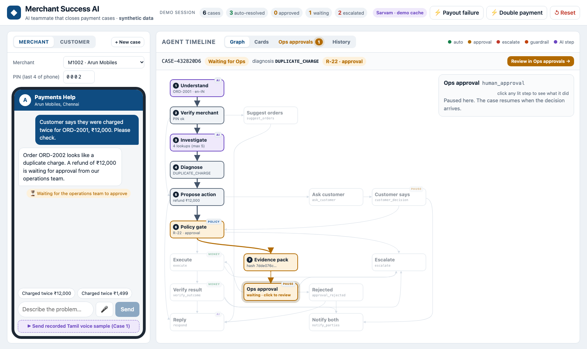
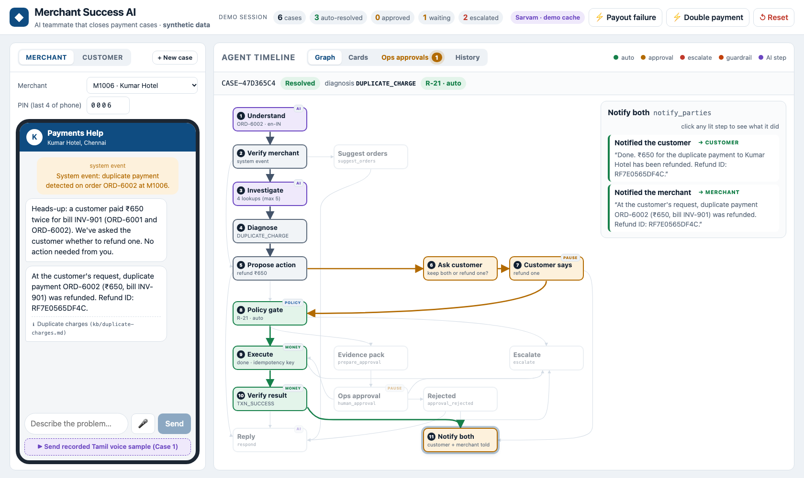
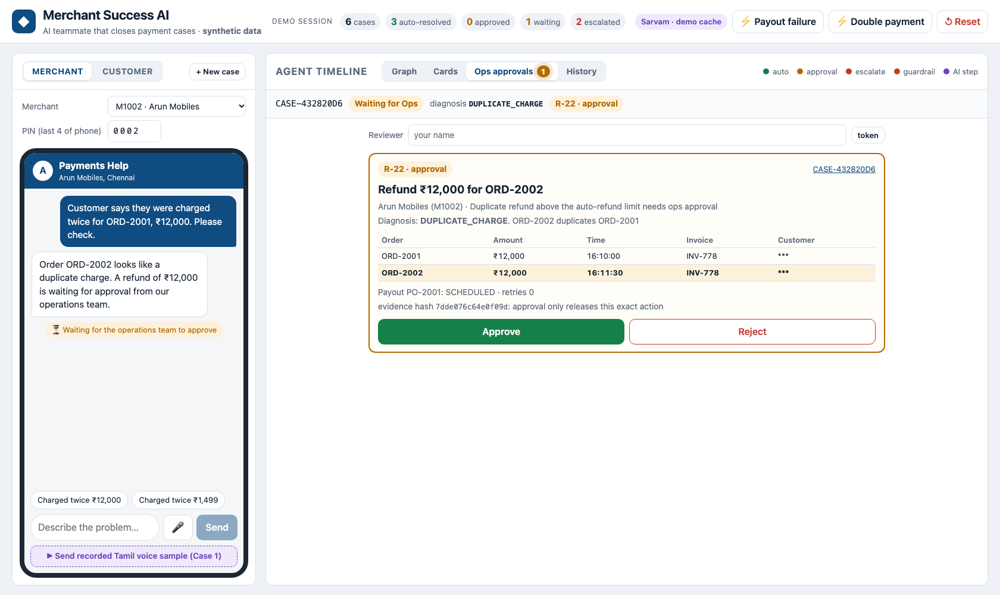
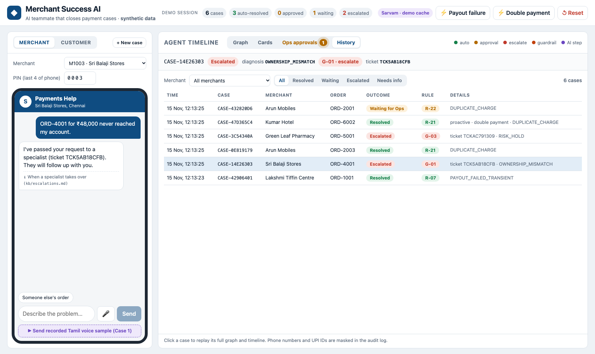

PAYTM BUILD FOR INDIA AI HACKATHON · TRACK 3
An AI teammate that closes merchant payment cases end to end, in Tamil or English, by chat or voice.
Autonomous AI Teammates
Chennai finale · 15 November 2026
Team Absolute AI
Navaneethamahavishnu · solo builder
The AI proposes
Sarvam understands and investigates
The policy engine decides
Plain rules: auto, approval, escalate
The verifier confirms
Re-reads the system after every action
THE PROBLEM
The customer paid, but the money never reached the shop’s bank because of a bank timeout or downtime.
A customer pays the same bill twice by mistake. Often nobody notices until someone complains.
Vague messages, Tamil voice notes, or a claim on an order that belongs to someone else.
TODAY
Merchant raises a ticket
Support checks several systems by hand
The merchant waits
Merchant Success AI
THE AI TEAMMATE
1 · AI
Understand
Tamil or English, chat or voice. Finds the order ID and amount.
2 · CODE
Verify merchant
Last 4 digits of phone. 3 wrong tries lock. No lookups before this.
3 · AI
Investigate
Chooses up to 5 read-only lookups across payment systems.
4 · CODE
Diagnose
Fixed codes: payout failed, duplicate, settled, not yours.
5 · CODE
Propose action
Action and amount copied from evidence, never from the AI.
6 · POLICY
Policy decides
Rules pick: automatic, Ops approval, or escalate.
7 · CODE
Execute
Payout retry or refund, with an idempotency key.
8 · VERIFY
Verify & reply
Re-reads the system. A mismatch escalates to a human.
Purple = AI · grey = plain code · blue = policy rules · green = verification
THE RULE WE BUILT AROUND
AI (Sarvam)
Understands, picks read-only lookups, phrases the reply. Never picks whose data, sets an amount or grants permission.
Policy engine
Plain Python reading policy.yaml. First matching rule wins; anything unknown escalates.
Verifier
After every payout or refund, re-reads the system. If it doesn’t match, the case goes to a human.
ARCHITECTURE
React + Vite, one page on the projector
Merchant / customer phone
Live agent graph + cards
Ops approvals + history
FastAPI
Live timeline, case history, Ops token, rate limits, CORS
LangGraph agent
17-node state machine. Pauses for Ops or the customer and resumes from a saved checkpoint.
Sarvam AI
sarvam-105b · 105b-conversations · Saaras v4
Policy engine
policy.yaml with rule IDs, validated at load
Mock payment systems
Paytm PG shapes · 130 synthetic payments, 12 merchants
SQLite
Records, masked audit log, checkpoints
Mini-RAG
ChromaDB over 8 docs, for citations only
THE STATE MACHINE
intake
verify_merchant
investigate
diagnose
propose_action
policy_gate
Automatic
execute
verify_outcome
respond
Ops approval
prepare_approval
human_approval
PAUSE
approve: execute as above · reject: ticket + reply
Escalate
escalate
ticket for a specialist, generic reply that reveals nothing
No order ID
suggest_orders
respond
shows the merchant’s own recent payments to tap
Customer (Case 4)
ask_customer
customer_decision
PAUSE
refund: policy_gate · keep: notify_parties
PAUSE = LangGraph interrupt(): state saved in a SQLite checkpoint, resumes even after a restart
POLICY TIERS
| Rule | Applies when | Decision |
|---|---|---|
| R-07 | Payout failed on a bank timeout or downtime, first retry, up to ₹50,000 | Automatic |
| R-10 | The same payout retry, above ₹50,000 | Ops approval |
| R-08 | A second retry of the same payout | Ops approval |
| R-21 | Verified duplicate charge, refund up to ₹5,000 | Automatic |
| R-22 | Verified duplicate charge, refund up to ₹1,00,000 | Ops approval |
| R-09, R-23 | Anything else: not transient, not verified, or too large | Escalate |
| G-01 to G-06 | Not your order, identity failed, risk flag, records disagree, systems down, unknown diagnosis | Escalate before any action |
policy/policy.yaml · first matching rule wins · validated at load · a limit change is one line
FOUR DEMO CASES
CASE 1 · TAMIL
Lakshmi Tiffin Centre
“My ₹2,400 for ORD-1001 hasn’t reached my bank” (in Tamil)
Found: payout failed on a bank timeout
R-07 · Automatic
Retried, verified, Tamil reply with the UTR
CASE 2
Arun Mobiles
“Customer was charged twice for ORD-2001, ₹12,000”
Found: ORD-2002, same UPI ID and invoice, 90 s apart
R-22 · Ops approval
Ops approves, refund verified, refund ID sent
CASE 3
Sri Balaji Stores
“ORD-4001 for ₹48,000 never reached my account”
Found: the order belongs to another merchant
G-01 · Escalate
Ticket raised; the reply reveals nothing
CASE 4 · PROACTIVE
Kumar Hotel
No complaint: a diner paid the same ₹650 bill twice
Found: same UPI ID and invoice, 70 s apart
Customer consent · R-21
Refunded, verified, both sides notified
15 demo situations: 8 fully automatic · 3 after a human approves · 3 escalated · 1 asks for details
THE LIVE APP

Case 2: the path stops at R-22 and “Ops approval” pulses until a human decides

Case 4: the customer branch, then R-21, refund, verify, and both sides notified
Numbered steps = the path taken · grey = branches it did not need · click any step for its details
OPS AND AUDIT

Ops approvals: evidence pack, masked customer details, and a hash that binds the decision

History: every case with its outcome and rule; filter by merchant or outcome, click to replay
Stored in SQLite: an audit event for every step, with phone numbers and UPI IDs masked · history needs the Ops token
CASE 4 · PROACTIVE
System event
Duplicate payment detected on ORD-6002 at Kumar Hotel
Code checks
Same UPI ID, same bill, same ₹650, 70 seconds apart
Ask the customer
“Keep both” or “Refund one”. The merchant gets a heads-up.
Refund one
policy: R-21 auto ≤ ₹5,000, R-22 Ops above
refund
verify
notify both
Keep both or no reply
no money moves
notify both
Consent is bound to a one-time token and the evidence hash · an invalid answer means keep · only Ops can record “no reply”
GUARDRAILS
Identity first
4-digit PIN, locks after 3 tries; no lookups before it
AI never picks merchant
Merchant ID comes from login; the model’s ID is dropped
Read-only investigation
Max 5 lookups; action tools are never shown to the AI
Idempotent money moves
Every payout and refund carries an idempotency key
No over-refund
Refunds can never exceed what was paid, across cases
Read-after-write
Every action re-read from the system; mismatch escalates
Reply validator
Every number and ID in a reply must exist in evidence
Evidence-bound approval
Ops token, reviewer name and a hash of the exact evidence
PII masked in logs
Phone numbers and customer UPI IDs masked before logging
Fail closed: an unknown action, unmatched rule, failed verification or a system down 3 times all escalate
NO MADE-UP PAYMENT FACTS
1 · CODE
Template
Picks the outcome and language, with {placeholders}
2 · AI
Sarvam rephrases
Sees placeholders only, never real amounts or IDs
3 · CODE
Fill values
From evidence; each placeholder exactly once
4 · VERIFY
Validator
Every number in evidence? Right script? Else: safe template
Template the AI rephrases (Case 1, English):
Your ₹{amount} for order {order_id} had failed at the bank. I retried it and it has now reached your account {bank_account}. UTR: {utr}.
Code fills: ₹2,400 · ORD-1001 · XXXX4521 · the UTR read back from the payout system
Seen in testing: Sarvam invented a date and once answered in Malayalam; the validator caught both
TAMIL VOICE WITH SARVAM
VOICE NOTE, TRANSCRIBED
என் ORD-1001 ₹2,400 பணம் இன்னும் என் வங்கிக்கு வரவில்லை
“My ₹2,400 for ORD-1001 hasn’t reached my bank yet.”
Spoken order numbers such as “ஓஆர்டி 1001” are normalised to ORD-1001 by code.
Saaras v4 · speech to text
Tamil and code-mixed audio to text in about 0.5 s
sarvam-105b · understand and investigate
Structured intake and read-only tool calls
sarvam-105b-conversations · reply
Tamil or English reply in about 0.2 s, script checked
The Sarvam key stays on the server · the demo sample voice was generated with Bulbul v3
PROOF
184
automated tests pass, with the AI mocked so they are deterministic
150/150
repeat runs pass: 15 scenarios × 10, with cached Sarvam answers
300/300
chaos runs with 25% of system calls failing: no crash, never a double payout or refund
15 demo situations, plus 13 more hidden in 130 payments across 12 merchants
8 fully automatic
3 after approval
3 escalated
1 asks
Speed: live Sarvam 9–17 s per case · demo cache about 0.03 s · reply about 0.2 s
PATH TO PRODUCTION
TODAY · PROTOTYPE
NEXT · PILOT
THEN · SCALE
The same pattern fits claims or loan servicing: AI investigates, policy decides, verifier confirms
MERCHANT SUCCESS AI
An AI teammate that closes merchant payment cases: the AI proposes, the policy engine decides, the verifier confirms.
184 tests
150/150 repeat runs
300/300 chaos runs
Tamil voice with Sarvam
Questions welcome · Team Absolute AI · Navaneethamahavishnu · all data and systems shown are synthetic